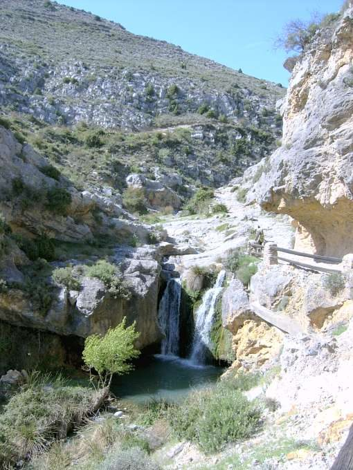
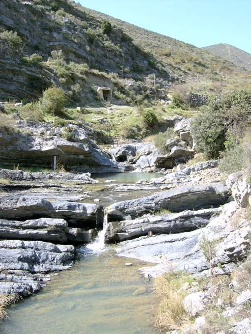

Barranco de las Puertas
Préjano · comarca del Cidacos
- Distancia4,4 kmida y vuelta
- Desnivel115 m
- Tiempo orientativo1 h 30 min
- Dificultadbaja
- Época recomendadaprimavera
- Terrenocamino y senda
El principal ‘encanto’ que tiene este barranco es el de que, a pesar de encontrarse escondido en una de las zonas más secas de la geografía riojana, durante un par de meses al año se permite el lujo de obsequiarnos con un espectáculo de agua; multitud de pozas, cascadas… Los visitantes siempre suelen dejar a un lado el pueblo de Préjano ya que no se encuentra en ninguna vía de comunicación principal.
Y para los que llegan a pararse en esta localidad el Barranco de las Puertas también suele pasar desapercibido. Recientemente se ha hecho llegar hasta él un ramal de la Vía Verde del Cidacos, pero yo recomiendo remontarlo intentando ir lo más cerca posible de su cauce. Nuestro paseo nos hará pasar también junto a la boca de antiguas minas, un hermoso puente de piedra y algunas recreaciones de yacimientos de icnitas.
{kind=link}

{kind=link}

Recorrido
El comienzo de este paseo puede resultar un poco confuso. Préjano tiene dos iglesias. Nosotros partiremos desde la de San Miguel. Junto a ella hay un cartel que nos indica la dirección hacia el yacimiento de icnitas de Valdeté; que nos servirá de orientación durante los primeros metros de este paseo. Pasamos junto a un crucero y un lavadero, dejamos atrás el pueblo y el camino desciende buscando el cauce del Barranco de las Puertas.
A partir de aquí dejamos de prestar atención a las indicaciones del yacimiento de Valdeté y nos limitaremos a remontar el curso de agua utilizando un camino ancho, pero poco marcado, que cambia varias veces de una margen a otra del arroyo. Más adelante dejamos atrás una presa y llegando a una confluencia de barrancos, una especie de trocha, hacia la derecha, nos invita a abandonar el cauce y ascender en busca de una pequeña edificación.
Tomamos esta opción y en unos metros llegamos a la confluencia con un camino asfaltado por el que discurre la Vía Verde de Préjano. Pocos metros después la vía verde llega a su fin y es ahora cuando comenzamos a abordar el tramo más espectacular del barranco. Tomamos un sendero labrado en la roca y enseguida nos encontramos con una cascada de más de 5 metros.
Continuamos nuestro andar e inesperadamente la corriente de agua desaparece. Poco después, un sólido puente de piedra nos lleva a la margen derecha del barranco. Continuamos remontando el barranco y el seco cauce de nuevo vuelve a la vida. A partir de aquí multitud de pequeñas pozas se suceden ininterrumpidamente. Nuestro paseo termina poco después, al llegar a unas praderas en las que confluyen varios cursos de agua, momento que aprovecha el Arroyo de las Puertas para trazar un brusco giro hacia la derecha.